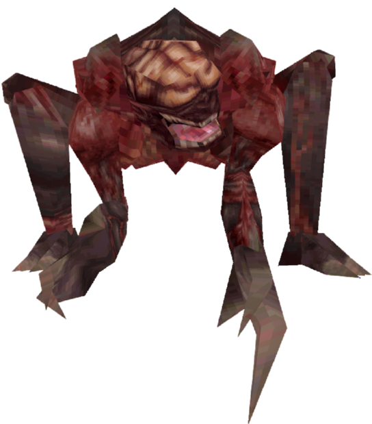

Enemigos
El brote del virus-T en Raccoon City no solo convirtió a sus habitantes en zombis: también dio vida a criaturas creadas por la Corporación Umbrella y transformó a los animales de la ciudad. Hacé clic en un enemigo para ver su página.
El brote del virus-T en Raccoon City no solo convirtió a sus habitantes en zombis: también dio vida a criaturas creadas por la Corporación Umbrella y transformó a los animales de la ciudad. Hacé clic en un enemigo para ver su página.
Humanos infectados por el virus-T y las criaturas que Umbrella desarrolló a partir de ellos. Son los enemigos más peligrosos del juego.




Animales que se contagiaron el virus-T por accidente, al comer restos infectados o al entrar en contacto con el agua contaminada. Este contagio se conoce como infección secundaria.